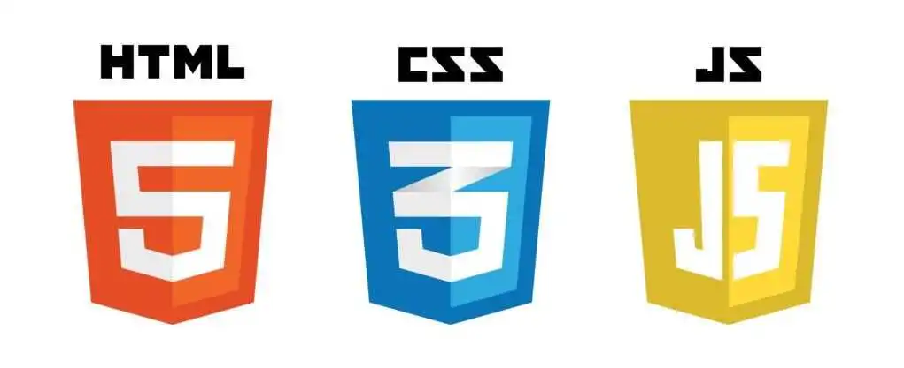

Desenvolvimento Front End

O que faz um desenvolvedor de Front End?
Principais responsabilidades:
- Estruturação do conteúdo com HTML (HyperText Markup Language).
- Estilização visual com CSS (Cascading Style Sheets), definindo cores, fontes, espaçamentos,
animações, etc.
- Interatividade e lógica no navegador com JavaScript, como menus que se abrem, formulários dinâmicos,
sliders, entre outros.
- Responsividade, garantindo que o site funcione bem em diferentes tamanhos de tela (celular, tablet,
desktop).
- Integração com APIs, para buscar ou enviar dados para servidores.
- Otimização de performance, para que o site carregue rápido e funcione de forma fluida.
- Acessibilidade, tornando o site utilizável por pessoas com deficiências.
Ferramentas e tecnologias comuns:
- Frameworks e bibliotecas: React, Vue.js, Angular, Svelte.
- Pré-processadores de CSS: Sass, LESS.
- Gerenciadores de pacotes: npm, Yarn.
- Controle de versão: Git.
- Ferramentas de build: Webpack, Vite.
Perfil Ideal:
Um bom desenvolvedor front-end combina habilidades técnicas com sensibilidade estética, além de
estar sempre atualizado com as tendências e boas práticas da web.